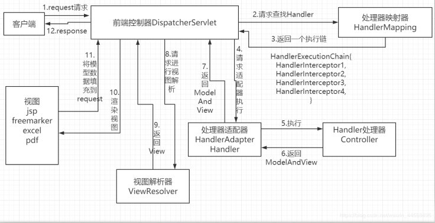

<!DOCTYPE html>
<html>
<head><meta name="generator" content="Hexo 3.9.0">
  <meta charset="utf-8">
  
  <!-- 对于springMVC的运行过程的理解 | Zesystem&#39;blog -->
  <title>Zesystem's  Space</title>
  <meta name="viewport" content="width=device-width, initial-scale=1, maximum-scale=1">
  <meta name="keywords" content="This is Zesystem's blog.">
  <!-- 
  
    <meta name="keywords" content="MinHow,MinHow's Blog" />
    -->
  <meta name="description" content="今天又复习了一下springMVC的框架，又看了书上的解释，现在对springMVC运行原理做点总结，说的不好，请大佬们不要介意。">
<meta name="keywords" content="springMVC,运行原理">
<meta property="og:type" content="article">
<meta property="og:title" content="对于springMVC的运行过程的理解">
<meta property="og:url" content="https://zesystem.github.io/2019/08/02/对于springMVC的运行过程的理解/index.html">
<meta property="og:site_name" content="Zesystem&#39;blog">
<meta property="og:description" content="今天又复习了一下springMVC的框架，又看了书上的解释，现在对springMVC运行原理做点总结，说的不好，请大佬们不要介意。">
<meta property="og:locale" content="default">
<meta property="og:image" content="https://zesystem.github.io/2019/08/02/对于springMVC的运行过程的理解/1.png">
<meta property="og:updated_time" content="2019-08-02T15:11:55.952Z">
<meta name="twitter:card" content="summary">
<meta name="twitter:title" content="对于springMVC的运行过程的理解">
<meta name="twitter:description" content="今天又复习了一下springMVC的框架，又看了书上的解释，现在对springMVC运行原理做点总结，说的不好，请大佬们不要介意。">
<meta name="twitter:image" content="https://zesystem.github.io/2019/08/02/对于springMVC的运行过程的理解/1.png">
  
  
    <link rel="icon" href="/favicon.ico">
  
  <link href="//cdn.bootcss.com/font-awesome/4.7.0/css/font-awesome.min.css" rel="stylesheet" type="text/css">
  <link rel="stylesheet" href="/css/style.css">
  <script src="/js/pace.min.js"></script>
  

  
	<script>
	var _hmt = _hmt || [];
	(function() {
	  var hm = document.createElement("script");
	  hm.src = "//hm.baidu.com/hm.js?true";
	  var s = document.getElementsByTagName("script")[0]; 
	  s.parentNode.insertBefore(hm, s);
	})();
	</script>

  
  <div style="display: none;">
    <script src="//s22.cnzz.com/z_stat.php?id=true&web_id=true" language="JavaScript"></script>
  </div>


</head>
</html>
<body>
  <div id="container">
      <header id="header">
    <div id="banner"></div>
    <div id="header-outer">
        <div id="header-menu" class="header-menu-pos animated">
            <div class="header-menu-container">
                <a href="/" class="left">
                    <span class="site-title">Zesystem</span>
                </a>
                <nav id="header-menu-nav" class="right">
                    
                    <a  href="/">
                        <i class="fa fa-home"></i>
                        <span>我的家</span>
                    </a>
                    
                    <a  href="/archives">
                        <i class="fa fa-archive"></i>
                        <span>干货s</span>
                    </a>
                    
                    <a  href="/about">
                        <i class="fa fa-user"></i>
                        <span>关于me</span>
                    </a>
                    
                </nav>
                <a class="mobile-header-menu-button">
                    <i class="fa fa-bars"></i>
                </a>
            </div>
        </div>
        <div id="header-row">
            <div id="logo">
                <a href="/">
                    
                </a>
            </div>
            <div class="header-info">
                <div id="header-title">
                    
                    <h2>
                        Zesystem
                    </h2>
                    
                </div>
                <div id="header-description">
                    
                    <h3>
                        不平凡的人生需要走不平凡的路
                    </h3>
                    
                </div>
            </div>
            <nav class="header-nav">
                <div class="social">
                    
                        <a title="CSDN" target="_blank" href="https://blog.csdn.net/weixin_44588495">
                            <i class="fa fa-home fa-2x"></i></a>
                    
                        <a title="Github" target="_blank" href="https://github.com/Zesystem">
                            <i class="fa fa-github fa-2x"></i></a>
                    
                        <a title="2502266520"  ">
                            <i class="fa fa-qq fa-2x"></i></a>
                    
                </div>
            </nav>
        </div>
    </div>
</header>
      <div class="outer">
        <section id="main" class="body-wrap"><article id="post-对于springMVC的运行过程的理解" class="article article-type-post" itemscope itemprop="blogPost">
  <div class="article-inner">
    
      <header class="article-header">
        
  
    <h1 class="post-title" itemprop="name">
      对于springMVC的运行过程的理解
    </h1>
    <div class="post-title-bar">
      <ul>
          
              <li>
                  <i class="fa fa-book"></i>
                  
                      <a href="/categories/java框架/">java框架</a>
                  
              </li>
          
        <li>
          <i class="fa fa-calendar"></i>  2019-08-02
        </li>
        <li>
          <i class="fa fa-eye"></i>
          <span id="busuanzi_value_page_pv"></span>
        </li>
      </ul>
    </div>
  

          
      </header>
    
    <div class="article-entry post-content" itemprop="articleBody">
      
            
            <p>今天又复习了一下springMVC的框架，又看了书上的解释，现在对springMVC运行原理做点总结，说的不好，请大佬们不要介意。</p>
<a id="more"></a>
<h3 id="啥是springMVC？"><a href="#啥是springMVC？" class="headerlink" title="啥是springMVC？"></a>啥是springMVC？</h3><ul>
<li>Spring MVC是Spring提供的一个强大而灵活的web框架。借助于注解，Spring MVC提供了几乎是POJO的开发模式，使得控制器的开发和测试更加简单。这些控制器一般不会直接处理请求。而是调用业务层的方法进行处理，而业务层调用持久层，通过Spring的依赖注入功能，这些bean被注入到控制器中。</li>
<li>springMVC是SSM中的s之一。<h3 id="springMVC中的组件"><a href="#springMVC中的组件" class="headerlink" title="springMVC中的组件"></a>springMVC中的组件</h3></li>
<li>1、DispatcherServlet为前端控制器，它的作用相当于CPU，一切的工作活动都由这个前端控制器来控制。所有的请求都有经过它来统一分发。</li>
<li>2、HandlerMapping 为处理器映射器，为用户请求的url，能够完成客户请求到Controller映射。 。</li>
<li>3、HandlerAdapyer 为处理器适配器，找到对应controller。</li>
<li>4、ViewResolver 为视图解析器解析View对象，返回给前端的视图页面。<h3 id="springMVC原理图"><a href="#springMVC原理图" class="headerlink" title="springMVC原理图"></a>springMVC原理图</h3></li>
<li>springMVC的真正内部执行过程是这样的。<br><h3 id="web-xml"><a href="#web-xml" class="headerlink" title="web.xml"></a>web.xml</h3></li>
<li>DispatcherServlet是整个Spring MVC的核心。它负责接收HTTP请求组织协调Spring MVC的各个组成部分。其主要工作有以下三项：<br>（1）截获符合特定格式的URL请求。<br>（2）初始化DispatcherServlet上下文对应WebApplicationContext，并将其与业务层、持久化层的WebApplicationContext建立关联。<br>（3）初始化Spring MVC的各个组成组件，并装配到DispatcherServlet中。</li>
<li>对应web.xml文件</li>
</ul>
<figure class="highlight xml"><table><tr><td class="gutter"><pre><span class="line">1</span><br><span class="line">2</span><br><span class="line">3</span><br><span class="line">4</span><br><span class="line">5</span><br><span class="line">6</span><br><span class="line">7</span><br><span class="line">8</span><br><span class="line">9</span><br><span class="line">10</span><br><span class="line">11</span><br><span class="line">12</span><br><span class="line">13</span><br><span class="line">14</span><br><span class="line">15</span><br><span class="line">16</span><br><span class="line">17</span><br><span class="line">18</span><br><span class="line">19</span><br><span class="line">20</span><br><span class="line">21</span><br><span class="line">22</span><br></pre></td><td class="code"><pre><span class="line"><span class="meta">&lt;!DOCTYPE web-app PUBLIC</span></span><br><span class="line"><span class="meta"> "-//Sun Microsystems, Inc.//DTD Web Application 2.3//EN"</span></span><br><span class="line"><span class="meta"> "http://java.sun.com/dtd/web-app_2_3.dtd" &gt;</span></span><br><span class="line"></span><br><span class="line"><span class="tag">&lt;<span class="name">web-app</span>&gt;</span></span><br><span class="line">  <span class="tag">&lt;<span class="name">display-name</span>&gt;</span>Archetype Created Web Application<span class="tag">&lt;/<span class="name">display-name</span>&gt;</span></span><br><span class="line"><span class="comment">&lt;!--  配置servlet--&gt;</span></span><br><span class="line">  <span class="tag">&lt;<span class="name">servlet</span>&gt;</span></span><br><span class="line">    <span class="tag">&lt;<span class="name">servlet-name</span>&gt;</span>dispatcherServlet<span class="tag">&lt;/<span class="name">servlet-name</span>&gt;</span></span><br><span class="line">    <span class="tag">&lt;<span class="name">servlet-class</span>&gt;</span>org.springframework.web.servlet.DispatcherServlet<span class="tag">&lt;/<span class="name">servlet-class</span>&gt;</span></span><br><span class="line"><span class="comment">&lt;!--    加载SpringMVC配置文件--&gt;</span></span><br><span class="line">    <span class="tag">&lt;<span class="name">init-param</span>&gt;</span></span><br><span class="line">      <span class="tag">&lt;<span class="name">param-name</span>&gt;</span>contextConfigLocation<span class="tag">&lt;/<span class="name">param-name</span>&gt;</span></span><br><span class="line">      <span class="tag">&lt;<span class="name">param-value</span>&gt;</span>classpath:springMVC.xml<span class="tag">&lt;/<span class="name">param-value</span>&gt;</span></span><br><span class="line">    <span class="tag">&lt;/<span class="name">init-param</span>&gt;</span></span><br><span class="line">    <span class="tag">&lt;<span class="name">load-on-startup</span>&gt;</span>1<span class="tag">&lt;/<span class="name">load-on-startup</span>&gt;</span></span><br><span class="line">  <span class="tag">&lt;/<span class="name">servlet</span>&gt;</span></span><br><span class="line">  <span class="tag">&lt;<span class="name">servlet-mapping</span>&gt;</span></span><br><span class="line">    <span class="tag">&lt;<span class="name">servlet-name</span>&gt;</span>dispatcherServlet<span class="tag">&lt;/<span class="name">servlet-name</span>&gt;</span></span><br><span class="line">    <span class="tag">&lt;<span class="name">url-pattern</span>&gt;</span>/<span class="tag">&lt;/<span class="name">url-pattern</span>&gt;</span></span><br><span class="line">  <span class="tag">&lt;/<span class="name">servlet-mapping</span>&gt;</span></span><br><span class="line"><span class="tag">&lt;/<span class="name">web-app</span>&gt;</span></span><br></pre></td></tr></table></figure>

<ul>
<li>在启动tomcat的时候，服务器解析web.xml中的文件，取到前端控制器dispatcherServlet，其实前端控制器就是一个servlet，这里servlet-mapping标签配置的是我们前端控制器要拦截的的路径，这里的/表示所有的路径。init-param标签里面是需要初始化的文件，这里就初始化了springMVC.xml这个配置springMVC的文件。</li>
<li>一般我们还在web.xml中加入解决中文乱码的配置文件</li>
</ul>
<figure class="highlight xml"><table><tr><td class="gutter"><pre><span class="line">1</span><br><span class="line">2</span><br><span class="line">3</span><br><span class="line">4</span><br><span class="line">5</span><br><span class="line">6</span><br><span class="line">7</span><br><span class="line">8</span><br><span class="line">9</span><br><span class="line">10</span><br><span class="line">11</span><br><span class="line">12</span><br><span class="line">13</span><br></pre></td><td class="code"><pre><span class="line"><span class="comment">&lt;!--  解决中文乱码--&gt;</span></span><br><span class="line">  <span class="tag">&lt;<span class="name">filter</span>&gt;</span></span><br><span class="line">    <span class="tag">&lt;<span class="name">filter-name</span>&gt;</span>characterEncodingFilter<span class="tag">&lt;/<span class="name">filter-name</span>&gt;</span></span><br><span class="line">    <span class="tag">&lt;<span class="name">filter-class</span>&gt;</span>org.springframework.web.filter.CharacterEncodingFilter<span class="tag">&lt;/<span class="name">filter-class</span>&gt;</span></span><br><span class="line">    <span class="tag">&lt;<span class="name">init-param</span>&gt;</span></span><br><span class="line">      <span class="tag">&lt;<span class="name">param-name</span>&gt;</span>encoding<span class="tag">&lt;/<span class="name">param-name</span>&gt;</span></span><br><span class="line">      <span class="tag">&lt;<span class="name">param-value</span>&gt;</span>UTF-8<span class="tag">&lt;/<span class="name">param-value</span>&gt;</span></span><br><span class="line">    <span class="tag">&lt;/<span class="name">init-param</span>&gt;</span></span><br><span class="line">  <span class="tag">&lt;/<span class="name">filter</span>&gt;</span></span><br><span class="line">  <span class="tag">&lt;<span class="name">filter-mapping</span>&gt;</span></span><br><span class="line">    <span class="tag">&lt;<span class="name">filter-name</span>&gt;</span>characterEncodingFilter<span class="tag">&lt;/<span class="name">filter-name</span>&gt;</span></span><br><span class="line">    <span class="tag">&lt;<span class="name">url-pattern</span>&gt;</span>/*<span class="tag">&lt;/<span class="name">url-pattern</span>&gt;</span></span><br><span class="line">  <span class="tag">&lt;/<span class="name">filter-mapping</span>&gt;</span></span><br></pre></td></tr></table></figure>

<h3 id="springMVC-xml这个文件"><a href="#springMVC-xml这个文件" class="headerlink" title="springMVC.xml这个文件"></a>springMVC.xml这个文件</h3><figure class="highlight xml"><table><tr><td class="gutter"><pre><span class="line">1</span><br><span class="line">2</span><br><span class="line">3</span><br><span class="line">4</span><br><span class="line">5</span><br><span class="line">6</span><br><span class="line">7</span><br><span class="line">8</span><br><span class="line">9</span><br><span class="line">10</span><br><span class="line">11</span><br><span class="line">12</span><br><span class="line">13</span><br><span class="line">14</span><br><span class="line">15</span><br><span class="line">16</span><br><span class="line">17</span><br><span class="line">18</span><br><span class="line">19</span><br><span class="line">20</span><br><span class="line">21</span><br><span class="line">22</span><br><span class="line">23</span><br><span class="line">24</span><br><span class="line">25</span><br><span class="line">26</span><br><span class="line">27</span><br><span class="line">28</span><br><span class="line">29</span><br><span class="line">30</span><br><span class="line">31</span><br><span class="line">32</span><br><span class="line">33</span><br><span class="line">34</span><br></pre></td><td class="code"><pre><span class="line"><span class="meta">&lt;?xml version="1.0" encoding="UTF-8"?&gt;</span></span><br><span class="line"><span class="tag">&lt;<span class="name">beans</span> <span class="attr">xmlns</span>=<span class="string">"http://www.springframework.org/schema/beans"</span></span></span><br><span class="line"><span class="tag">       <span class="attr">xmlns:mvc</span>=<span class="string">"http://www.springframework.org/schema/mvc"</span></span></span><br><span class="line"><span class="tag">       <span class="attr">xmlns:context</span>=<span class="string">"http://www.springframework.org/schema/context"</span></span></span><br><span class="line"><span class="tag">       <span class="attr">xmlns:xsi</span>=<span class="string">"http://www.w3.org/2001/XMLSchema-instance"</span></span></span><br><span class="line"><span class="tag">       <span class="attr">xsi:schemaLocation</span>=<span class="string">"</span></span></span><br><span class="line"><span class="tag"><span class="string">             http://www.springframework.org/schema/beans</span></span></span><br><span class="line"><span class="tag"><span class="string">             http://www.springframework.org/schema/beans/spring-beans.xsd</span></span></span><br><span class="line"><span class="tag"><span class="string">             http://www.springframework.org/schema/mvc</span></span></span><br><span class="line"><span class="tag"><span class="string">             http://www.springframework.org/schema/mvc/spring-mvc.xsd</span></span></span><br><span class="line"><span class="tag"><span class="string">             http://www.springframework.org/schema/context</span></span></span><br><span class="line"><span class="tag"><span class="string">             http://www.springframework.org/schema/context/spring-context.xsd</span></span></span><br><span class="line"><span class="tag"><span class="string">        "</span>&gt;</span></span><br><span class="line"><span class="comment">&lt;!--    扫描对应的包--&gt;</span></span><br><span class="line">    <span class="tag">&lt;<span class="name">context:component-scan</span> <span class="attr">base-package</span>=<span class="string">"com.spring"</span>&gt;</span><span class="tag">&lt;/<span class="name">context:component-scan</span>&gt;</span></span><br><span class="line"><span class="comment">&lt;!--    视图解析器--&gt;</span></span><br><span class="line">    <span class="tag">&lt;<span class="name">bean</span> <span class="attr">id</span>=<span class="string">"internalResourceViewResolver"</span> <span class="attr">class</span>=<span class="string">"org.springframework.web.servlet.view.InternalResourceViewResolver"</span>&gt;</span></span><br><span class="line">        <span class="tag">&lt;<span class="name">property</span> <span class="attr">name</span>=<span class="string">"prefix"</span> <span class="attr">value</span>=<span class="string">"/WEB-INF/pages/"</span>&gt;</span><span class="tag">&lt;/<span class="name">property</span>&gt;</span></span><br><span class="line">        <span class="tag">&lt;<span class="name">property</span> <span class="attr">name</span>=<span class="string">"suffix"</span> <span class="attr">value</span>=<span class="string">".jsp"</span>&gt;</span><span class="tag">&lt;/<span class="name">property</span>&gt;</span></span><br><span class="line">    <span class="tag">&lt;/<span class="name">bean</span>&gt;</span></span><br><span class="line">    <span class="tag">&lt;<span class="name">bean</span> <span class="attr">id</span>=<span class="string">"multipartResolver"</span> <span class="attr">class</span>=<span class="string">"org.springframework.web.multipart.commons.CommonsMultipartResolver"</span>&gt;</span></span><br><span class="line">        <span class="tag">&lt;<span class="name">property</span> <span class="attr">name</span>=<span class="string">"maxUploadSize"</span> <span class="attr">value</span>=<span class="string">"10485760"</span>/&gt;</span></span><br><span class="line">    <span class="tag">&lt;/<span class="name">bean</span>&gt;</span></span><br><span class="line"><span class="comment">&lt;!--    映射处理器--&gt;</span></span><br><span class="line">    <span class="tag">&lt;<span class="name">bean</span> <span class="attr">class</span>=<span class="string">"org.springframework.web.servlet.mvc.method.RequestMappingInfoHandlerMapping"</span> <span class="attr">abstract</span>=<span class="string">"true"</span>/&gt;</span></span><br><span class="line"><span class="comment">&lt;!--    处理器适配器--&gt;</span></span><br><span class="line">    <span class="tag">&lt;<span class="name">bean</span> <span class="attr">class</span>=<span class="string">"org.springframework.web.servlet.mvc.method.AbstractHandlerMethodAdapter"</span> <span class="attr">abstract</span>=<span class="string">"true"</span>/&gt;</span></span><br><span class="line">    <span class="tag">&lt;<span class="name">mvc:annotation-driven</span> /&gt;</span></span><br><span class="line"><span class="comment">&lt;!--    静态资源--&gt;</span></span><br><span class="line">    <span class="tag">&lt;<span class="name">mvc:resources</span> <span class="attr">mapping</span>=<span class="string">"/css/*"</span> <span class="attr">location</span>=<span class="string">"resources/css/"</span>/&gt;</span></span><br><span class="line">    <span class="tag">&lt;<span class="name">mvc:resources</span> <span class="attr">mapping</span>=<span class="string">"/js/*"</span> <span class="attr">location</span>=<span class="string">"resources/js/"</span>/&gt;</span></span><br><span class="line">    <span class="tag">&lt;<span class="name">mvc:resources</span> <span class="attr">mapping</span>=<span class="string">"/images/*"</span> <span class="attr">location</span>=<span class="string">"resources/images/"</span>/&gt;</span></span><br><span class="line"></span><br><span class="line"><span class="tag">&lt;/<span class="name">beans</span>&gt;</span></span><br></pre></td></tr></table></figure>

<ul>
<li>第一个点：扫描对应的包context:component-scan，以完成Bean创建和自动依赖注入的功能 。这里利用了spring的注入，注解注入。</li>
<li>第二个点：bean id=”internalResourceViewResolver” 视图解析器，用于渲染页面返回页面，第一个property指的是对应的文件夹下，第二个代表后缀。</li>
<li>mvc:annotation-driven 为开启springMVC框架的注解的支持-。</li>
<li>mvc:resources为配置静态资源，那些静态资源可以通过。<h6 id="在加载springMVC文件的时候这些都解析了。只要来一个请求就会直接执行。"><a href="#在加载springMVC文件的时候这些都解析了。只要来一个请求就会直接执行。" class="headerlink" title="在加载springMVC文件的时候这些都解析了。只要来一个请求就会直接执行。"></a>在加载springMVC文件的时候这些都解析了。只要来一个请求就会直接执行。</h6><h3 id="Controller"><a href="#Controller" class="headerlink" title="Controller"></a>Controller</h3></li>
</ul>
<figure class="highlight java"><table><tr><td class="gutter"><pre><span class="line">1</span><br><span class="line">2</span><br><span class="line">3</span><br><span class="line">4</span><br><span class="line">5</span><br><span class="line">6</span><br><span class="line">7</span><br><span class="line">8</span><br><span class="line">9</span><br><span class="line">10</span><br><span class="line">11</span><br><span class="line">12</span><br><span class="line">13</span><br><span class="line">14</span><br><span class="line">15</span><br><span class="line">16</span><br><span class="line">17</span><br></pre></td><td class="code"><pre><span class="line"><span class="keyword">package</span> com.spring.controller;</span><br><span class="line"></span><br><span class="line"><span class="keyword">import</span> org.springframework.stereotype.Controller;</span><br><span class="line"><span class="keyword">import</span> org.springframework.web.bind.annotation.RequestMapping;</span><br><span class="line"></span><br><span class="line"><span class="keyword">import</span> java.util.UUID;</span><br><span class="line"></span><br><span class="line"><span class="meta">@Controller</span></span><br><span class="line"><span class="meta">@RequestMapping</span>(path = <span class="string">"con"</span>)</span><br><span class="line"><span class="keyword">public</span> <span class="class"><span class="keyword">class</span> <span class="title">controller</span> </span>&#123;</span><br><span class="line">    <span class="meta">@RequestMapping</span>(path = <span class="string">"test"</span>)</span><br><span class="line">    <span class="function"><span class="keyword">public</span> String <span class="title">test</span><span class="params">()</span> t </span>&#123;</span><br><span class="line"></span><br><span class="line">        <span class="keyword">return</span> <span class="string">"success"</span>;</span><br><span class="line">    &#125;</span><br><span class="line"></span><br><span class="line">&#125;</span><br></pre></td></tr></table></figure>

<ul>
<li>根据路径来执行每个方法。然后返回一个success.jsp，这里就经过了视图解析器，最终稿返回到前端页面（客户端）。</li>
</ul>

            <div class="post-copyright">
    <div class="content">
        <p>最后更新： 2019年08月02日 23:11</p>
        <p>原始链接： <a class="post-url" href="/2019/08/02/对于springMVC的运行过程的理解/" title="对于springMVC的运行过程的理解">https://zesystem.github.io/2019/08/02/对于springMVC的运行过程的理解/</a></p>
        <footer>
            <a href="https://zesystem.github.io">
                
                Zesystem
            </a>
        </footer>
    </div>
</div>

      
        
            
<div class="page-reward">
    <a id="rewardBtn" href="javascript:;">赏</a>
</div>

<div id="reward" class="post-modal reward-lay">
    <a class="close" href="javascript:;" id="reward-close">×</a>
    <span class="reward-title">
        <i class="icon icon-quote-left"></i>
        请我吃糖~
        <i class="icon icon-quote-right"></i>
    </span>
    <div class="reward-content">
        
        <div class="reward-code">
            
        </div>
        <div class="reward-select">
            
            <label class="reward-select-item checked" data-id="wechat" data-wechat="/images/wechat_code.jpg">
                
            </label>
            
            
            <label class="reward-select-item" data-id="alipay" data-alipay="/images/alipay_code.jpg">
                
            </label>
            
        </div>
    </div>
</div>


        
    </div>
    <footer class="article-footer">
        
        
<div class="post-share">
    <a href="javascript:;" id="share-sub" class="post-share-fab">
        <i class="fa fa-share-alt"></i>
    </a>
    <div class="post-share-list" id="share-list">
        <ul class="share-icons">
          <li>
            <a class="weibo share-sns" target="_blank" href="http://service.weibo.com/share/share.php?url=https://zesystem.github.io/2019/08/02/对于springMVC的运行过程的理解/&title=《对于springMVC的运行过程的理解》 — Zesystem'blog&pic=/images/springMVC.png" data-title="微博">
              <i class="fa fa-weibo"></i>
            </a>
          </li>
          <li>
            <a class="weixin share-sns" id="wxFab" href="javascript:;" data-title="微信">
              <i class="fa fa-weixin"></i>
            </a>
          </li>
          <li>
            <a class="qq share-sns" target="_blank" href="http://connect.qq.com/widget/shareqq/index.html?url=https://zesystem.github.io/2019/08/02/对于springMVC的运行过程的理解/&title=《对于springMVC的运行过程的理解》 — Zesystem'blog&source=今天又复习了一下springMVC的框架，又看了书上的解释，现在对springMVC运行原理做点总结，说的不好，请大佬们不要介意。" data-title="QQ">
              <i class="fa fa-qq"></i>
            </a>
          </li>
          <li>
            <a class="facebook share-sns" target="_blank" href="https://www.facebook.com/sharer/sharer.php?u=https://zesystem.github.io/2019/08/02/对于springMVC的运行过程的理解/" data-title="Facebook">
              <i class="fa fa-facebook"></i>
            </a>
          </li>
          <li>
            <a class="twitter share-sns" target="_blank" href="https://twitter.com/intent/tweet?text=《对于springMVC的运行过程的理解》 — Zesystem'blog&url=https://zesystem.github.io/2019/08/02/对于springMVC的运行过程的理解/&via=https://zesystem.github.io" data-title="Twitter">
              <i class="fa fa-twitter"></i>
            </a>
          </li>
          <li>
            <a class="google share-sns" target="_blank" href="https://plus.google.com/share?url=https://zesystem.github.io/2019/08/02/对于springMVC的运行过程的理解/" data-title="Google+">
              <i class="fa fa-google-plus"></i>
            </a>
          </li>
        </ul>
     </div>
</div>
<div class="post-modal wx-share" id="wxShare">
    <a class="close" href="javascript:;" id="wxShare-close">×</a>
    <p>扫一扫，分享到微信</p>
    
</div>

<div class="mask"></div>

        
        <ul class="article-footer-menu">
            
            
  <li class="article-footer-tags">
    <i class="fa fa-tags"></i>
      
    <a href="/tags/springMVC/" class="color5">springMVC</a>
      
    <a href="/tags/运行原理/" class="color5">运行原理</a>
      
  </li>

        </ul>
        
    </footer>
  </div>
</article>


    <aside class="post-toc-pos post-toc-top" id="post-toc">
        <nav class="post-toc-wrap">
            <ol class="post-toc"><li class="post-toc-item post-toc-level-3"><a class="post-toc-link" href="#啥是springMVC？"><span class="post-toc-text">啥是springMVC？</span></a></li><li class="post-toc-item post-toc-level-3"><a class="post-toc-link" href="#springMVC中的组件"><span class="post-toc-text">springMVC中的组件</span></a></li><li class="post-toc-item post-toc-level-3"><a class="post-toc-link" href="#springMVC原理图"><span class="post-toc-text">springMVC原理图</span></a></li><li class="post-toc-item post-toc-level-3"><a class="post-toc-link" href="#web-xml"><span class="post-toc-text">web.xml</span></a></li><li class="post-toc-item post-toc-level-3"><a class="post-toc-link" href="#springMVC-xml这个文件"><span class="post-toc-text">springMVC.xml这个文件</span></a><ol class="post-toc-child"><li class="post-toc-item post-toc-level-6"><a class="post-toc-link" href="#在加载springMVC文件的时候这些都解析了。只要来一个请求就会直接执行。"><span class="post-toc-text">在加载springMVC文件的时候这些都解析了。只要来一个请求就会直接执行。</span></a></li></ol></li></ol></li></ol></li><li class="post-toc-item post-toc-level-3"><a class="post-toc-link" href="#Controller"><span class="post-toc-text">Controller</span></a></li></ol>
        </nav>
    </aside>
    

<nav id="article-nav">
  
    <a href="/2019/08/03/springMVC基础知识/" id="article-nav-newer" class="article-nav-link-wrap">

      <span class="article-nav-title">
        <i class="fa fa-hand-o-left" aria-hidden="true"></i>
        
          springMVC基础知识
        
      </span>
    </a>
  
  
    <a href="/2019/08/02/js原型链的世界/" id="article-nav-older" class="article-nav-link-wrap">
      <span class="article-nav-title">js原型链的世界</span>
      <i class="fa fa-hand-o-right" aria-hidden="true"></i>
    </a>
  
</nav>


    
        <div id="SOHUCS" sid="对于springMVC的运行过程的理解" ></div>
<script type="text/javascript">
    (function(){
        var appid = 'true';
        var conf = 'true';
        var width = window.innerWidth || document.documentElement.clientWidth;
        if (width < 960) {
            window.document.write('<script id="changyan_mobile_js" charset="utf-8" type="text/javascript" src="https://changyan.sohu.com/upload/mobile/wap-js/changyan_mobile.js?client_id=' + appid + '&conf=' + conf + '"><\/script>'); } else { var loadJs=function(d,a){var c=document.getElementsByTagName("head")[0]||document.head||document.documentElement;var b=document.createElement("script");b.setAttribute("type","text/javascript");b.setAttribute("charset","UTF-8");b.setAttribute("src",d);if(typeof a==="function"){if(window.attachEvent){b.onreadystatechange=function(){var e=b.readyState;if(e==="loaded"||e==="complete"){b.onreadystatechange=null;a()}}}else{b.onload=a}}c.appendChild(b)};loadJs("https://changyan.sohu.com/upload/changyan.js",function(){window.changyan.api.config({appid:appid,conf:conf})}); } })(); </script>
    
</section>
        
      </div>
      <footer id="footer">
  <div class="outer">
    <div id="footer-info" class="inner">
      
<p>
    <span id="busuanzi_container_site_uv" style='display:none'>
        总访客数：<span id="busuanzi_value_site_uv"></span>
    </span>
    <span id="busuanzi_container_site_pv" style='display:none'>
        总访问量：<span id="busuanzi_value_site_pv"></span>
    </span>
</p>


      <p>
        This is Zesystem's personal blog site.
      </p>
    </div>
  </div>
</footer>
    <script async src="//busuanzi.ibruce.info/busuanzi/2.3/busuanzi.pure.mini.js"></script>
<script src="//cdn.bootcss.com/jquery/3.2.1/jquery.min.js"></script>
<script>
  var mihoConfig = {
      root: "https://zesystem.github.io",
      animate: true,
      isHome: false,
      share: true,
      reward: 1
  }
</script>
<div class="sidebar">
    <div id="sidebar-search" title="Search">
        <i class="fa fa-search"></i>
    </div>
    <div id="sidebar-category" title="Categories">
        <i class="fa fa-book"></i>
    </div>
    <div id="sidebar-tag" title="Tags">
        <i class="fa fa-tags"></i>
    </div>
    <div id="sidebar-top">
        <span class="sidebar-top-icon"><i class="fa fa-angle-up"></i></span>
    </div>
</div>
<div class="sidebar-menu-box" id="sidebar-menu-box">
    <div class="sidebar-menu-box-container">
        <div id="sidebar-menu-box-categories">
            <a class="category-link" href="/categories/JavaWeb/">JavaWeb</a><a class="category-link" href="/categories/SSM/">SSM</a><a class="category-link" href="/categories/Web前端开发/">Web前端开发</a><a class="category-link" href="/categories/java基础知识/">java基础知识</a><a class="category-link" href="/categories/java框架/">java框架</a><a class="category-link" href="/categories/maven高级/">maven高级</a><a class="category-link" href="/categories/计算机基础/">计算机基础</a><a class="category-link" href="/categories/设计模式/">设计模式</a>
        </div>
        <div id="sidebar-menu-box-tags">
            <a href="/tags/Mybatis/" style="font-size: 15px;">Mybatis</a> <a href="/tags/SSM框架搭建/" style="font-size: 10px;">SSM框架搭建</a> <a href="/tags/Spring/" style="font-size: 10px;">Spring</a> <a href="/tags/SpringMVC/" style="font-size: 10px;">SpringMVC</a> <a href="/tags/cookie/" style="font-size: 10px;">cookie</a> <a href="/tags/css优先级/" style="font-size: 10px;">css优先级</a> <a href="/tags/css权重/" style="font-size: 10px;">css权重</a> <a href="/tags/scope/" style="font-size: 15px;">scope</a> <a href="/tags/servlet/" style="font-size: 10px;">servlet</a> <a href="/tags/session/" style="font-size: 10px;">session</a> <a href="/tags/spring/" style="font-size: 10px;">spring</a> <a href="/tags/springMVC/" style="font-size: 15px;">springMVC</a> <a href="/tags/tags1/" style="font-size: 10px;">tags1</a> <a href="/tags/tags2/" style="font-size: 10px;">tags2</a> <a href="/tags/this指向/" style="font-size: 10px;">this指向</a> <a href="/tags/uft-16编码/" style="font-size: 10px;">uft-16编码</a> <a href="/tags/uft-8编码/" style="font-size: 10px;">uft-8编码</a> <a href="/tags/unicode编码/" style="font-size: 10px;">unicode编码</a> <a href="/tags/作用域链/" style="font-size: 15px;">作用域链</a> <a href="/tags/原型链/" style="font-size: 10px;">原型链</a> <a href="/tags/参数的传递方式/" style="font-size: 10px;">参数的传递方式</a> <a href="/tags/变量提升/" style="font-size: 10px;">变量提升</a> <a href="/tags/基础/" style="font-size: 10px;">基础</a> <a href="/tags/基础知识/" style="font-size: 20px;">基础知识</a> <a href="/tags/工厂方法模式/" style="font-size: 10px;">工厂方法模式</a> <a href="/tags/执行期上下文/" style="font-size: 15px;">执行期上下文</a> <a href="/tags/抽象工厂模式/" style="font-size: 10px;">抽象工厂模式</a> <a href="/tags/标签/" style="font-size: 10px;">标签</a> <a href="/tags/浮点数精度/" style="font-size: 10px;">浮点数精度</a> <a href="/tags/简单工厂模式/" style="font-size: 10px;">简单工厂模式</a> <a href="/tags/继承/" style="font-size: 10px;">继承</a> <a href="/tags/解决jar包冲突/" style="font-size: 10px;">解决jar包冲突</a> <a href="/tags/运行原理/" style="font-size: 10px;">运行原理</a> <a href="/tags/闭包/" style="font-size: 10px;">闭包</a> <a href="/tags/预编译/" style="font-size: 10px;">预编译</a>
        </div>
    </div>
    <a href="javascript:;" class="sidebar-menu-box-close">&times;</a>
</div>
<div class="mobile-header-menu-nav" id="mobile-header-menu-nav">
    <div class="mobile-header-menu-container">
        <span class="title">Menus</span>
        <ul class="mobile-header-menu-navbar">
            
            <li>
                <a  href="/">
                    <i class="fa fa-home"></i><span>我的家</span>
                </a>
            </li>
            
            <li>
                <a  href="/archives">
                    <i class="fa fa-archive"></i><span>干货s</span>
                </a>
            </li>
            
            <li>
                <a  href="/about">
                    <i class="fa fa-user"></i><span>关于me</span>
                </a>
            </li>
            
        </ul>
    </div>
    <div class="mobile-header-tag-container">
        <span class="title">Tags</span>
        <div id="mobile-header-container-tags">
            <a href="/tags/Mybatis/" style="font-size: 15px;">Mybatis</a> <a href="/tags/SSM框架搭建/" style="font-size: 10px;">SSM框架搭建</a> <a href="/tags/Spring/" style="font-size: 10px;">Spring</a> <a href="/tags/SpringMVC/" style="font-size: 10px;">SpringMVC</a> <a href="/tags/cookie/" style="font-size: 10px;">cookie</a> <a href="/tags/css优先级/" style="font-size: 10px;">css优先级</a> <a href="/tags/css权重/" style="font-size: 10px;">css权重</a> <a href="/tags/scope/" style="font-size: 15px;">scope</a> <a href="/tags/servlet/" style="font-size: 10px;">servlet</a> <a href="/tags/session/" style="font-size: 10px;">session</a> <a href="/tags/spring/" style="font-size: 10px;">spring</a> <a href="/tags/springMVC/" style="font-size: 15px;">springMVC</a> <a href="/tags/tags1/" style="font-size: 10px;">tags1</a> <a href="/tags/tags2/" style="font-size: 10px;">tags2</a> <a href="/tags/this指向/" style="font-size: 10px;">this指向</a> <a href="/tags/uft-16编码/" style="font-size: 10px;">uft-16编码</a> <a href="/tags/uft-8编码/" style="font-size: 10px;">uft-8编码</a> <a href="/tags/unicode编码/" style="font-size: 10px;">unicode编码</a> <a href="/tags/作用域链/" style="font-size: 15px;">作用域链</a> <a href="/tags/原型链/" style="font-size: 10px;">原型链</a> <a href="/tags/参数的传递方式/" style="font-size: 10px;">参数的传递方式</a> <a href="/tags/变量提升/" style="font-size: 10px;">变量提升</a> <a href="/tags/基础/" style="font-size: 10px;">基础</a> <a href="/tags/基础知识/" style="font-size: 20px;">基础知识</a> <a href="/tags/工厂方法模式/" style="font-size: 10px;">工厂方法模式</a> <a href="/tags/执行期上下文/" style="font-size: 15px;">执行期上下文</a> <a href="/tags/抽象工厂模式/" style="font-size: 10px;">抽象工厂模式</a> <a href="/tags/标签/" style="font-size: 10px;">标签</a> <a href="/tags/浮点数精度/" style="font-size: 10px;">浮点数精度</a> <a href="/tags/简单工厂模式/" style="font-size: 10px;">简单工厂模式</a> <a href="/tags/继承/" style="font-size: 10px;">继承</a> <a href="/tags/解决jar包冲突/" style="font-size: 10px;">解决jar包冲突</a> <a href="/tags/运行原理/" style="font-size: 10px;">运行原理</a> <a href="/tags/闭包/" style="font-size: 10px;">闭包</a> <a href="/tags/预编译/" style="font-size: 10px;">预编译</a>
        </div>
    </div>
</div>
<div class="search-wrap">
    <span class="search-close">&times;</span>
        <a href="javascript:;" class="header-icon waves-effect waves-circle waves-light" id="back">
            <i class="icon icon-lg icon-chevron-left"></i>
        </a>
        <input class="search-field" placeholder="Search..." id="keywords">
        <a id="search-submit" href="javascript:;">
            <i class="fa fa-search"></i>
        </a>
    <div class="search-container" id="search-container">
        <ul class="search-result" id="search-result">
        </ul>
    </div>
</div>

<div id="search-tpl">
    <li class="search-result-item">
        <a href="{url}" class="search-item-li">
            <span class="search-item-li-title" title="{title}">{title}</span>
        </a>
    </li>
</div>
<script src="/js/search.js"></script>
<script src="/js/main.js"></script>


  <script src="//cdn.bootcss.com/particles.js/2.0.0/particles.min.js"></script>
  <div id="particles"></div>
  <script src="/js/particles.js"></script>


  <link rel="stylesheet" href="//cdn.bootcss.com/animate.css/3.5.0/animate.min.css">
  <script src="//cdn.bootcss.com/scrollReveal.js/3.0.5/scrollreveal.js"></script>
  <script src="/js/animate.js"></script>


  <script src="/js/pop-img.js"></script>
  <script>
     $(".article-entry p img").popImg();
  </script>

  </div>
</body>
</html>